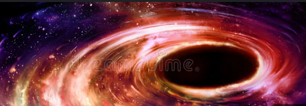
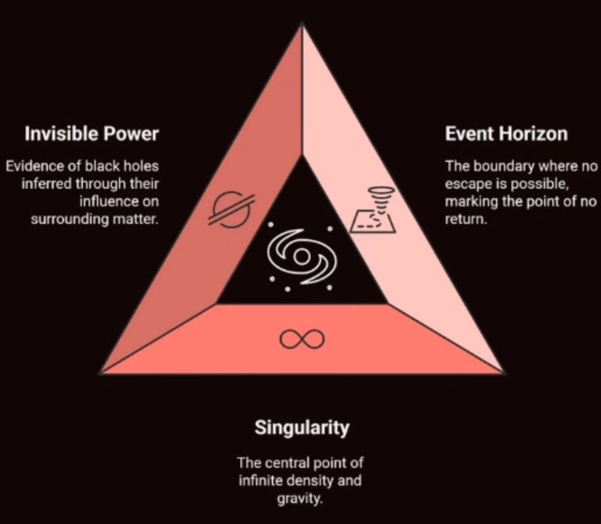
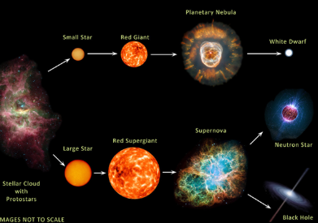
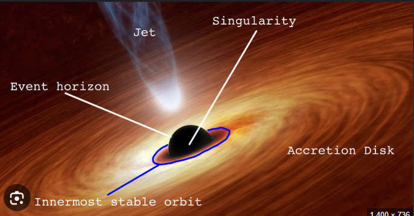

The Mysterious Giants of Space
Have you ever imagined a place in the universe where gravity is so powerful that nothing, not even light itself, can escape its pull? This mysterious phenomenon is known as a black hole. Formed from the collapse of massive stars, black holes represent some of the most extreme and fascinating objects in space, warping both time and space around them.
Black holes are among the most mysterious and powerful objects in the universe. Their immense gravity can stretch time, bend light, and even consume entire stars, making them both terrifying and fascinating. By studying black holes, scientists gain deeper insights into the extreme laws of physics, unlocking secrets about how the universe works at its most fundamental level.
A black hole is born from the dramatic death of a massive star. When such a star exhausts its fuel, it can no longer support itself, leading to a catastrophic collapse under its own gravity. This process compresses the star’s core into an incredibly dense region where gravity becomes so strong that it pulls everything inward. In simple terms, the life cycle goes from a massive star’s existence, to its death, followed by gravitational collapse, ultimately forming a dense and powerful black hole.
Black holes are defined by some of the most extreme features in the universe. Though invisible to the eye, their presence is revealed through the powerful influence they exert on surrounding matter. At the edge lies the event horizon, the point of no return where nothing—not even light—can escape. At the very core is the singularity, a region of infinite density and gravity where the known laws of physics break down, making black holes one of the greatest cosmic mysteries.
Black holes come with fascinating characteristics that challenge our understanding of the universe. They vary in size, ranging from tiny ones to supermassive giants that sit at the centers of galaxies. Near a black hole, time itself slows down due to intense gravity—a phenomenon known as time dilation. While they pull matter inward, black holes can also eject powerful jets of particles traveling at incredible speeds. Even more astonishing, when black holes collide, they create gravitational waves—ripples in spacetime that scientists can now detect, offering new ways to study the cosmos.
Studying black holes requires creative methods since they can’t be seen directly. Scientists capture their presence by imaging shadows using global telescope networks, like the Event Horizon Telescope. They also observe the orbits of nearby stars, which reveal the hidden pull of a black hole’s immense gravity. In addition, X-ray telescopes detect high-energy radiation emitted by matter as it spirals inward, offering another window into these mysterious cosmic giants.
Falling into a black hole would be a mind-bending experience shaped by extreme physics. To an outside observer, you would appear frozen in time near the event horizon, never fully crossing it. From your perspective, however, you’d be stretched thinner and thinner as you approached the center, a process known as spaghettification, where gravity pulls much more strongly on your feet than your head. This strange and terrifying effect highlights just how alien and powerful black holes truly are.